４ 薬剤処方
４－１ 薬剤処方箋参照
（１） 「処方箋」ボタンをクリックします
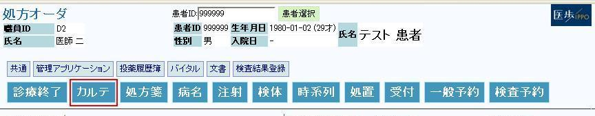
（２） 処方オーダ画面が表示されます
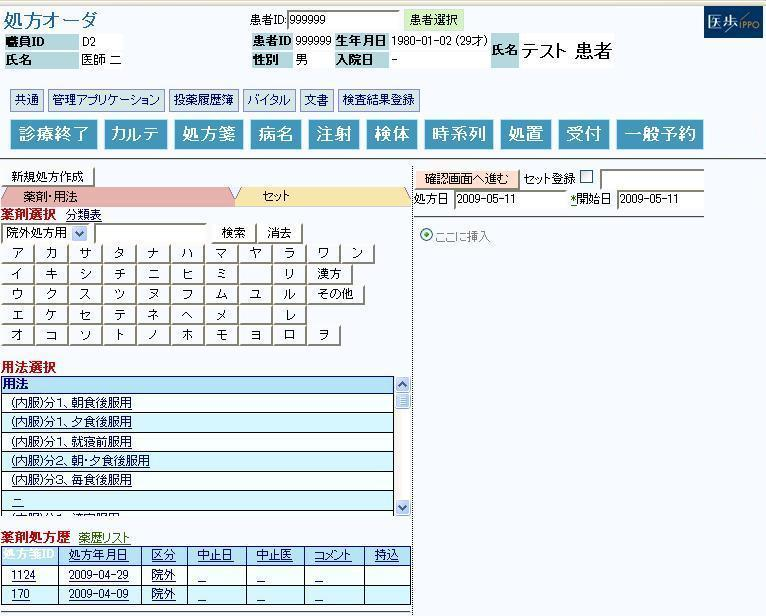
４－２ 処方箋 新規作成
（１） 処方する薬剤の先頭名と同じ文字のボタン（薬剤選択ボタン）をクリックします
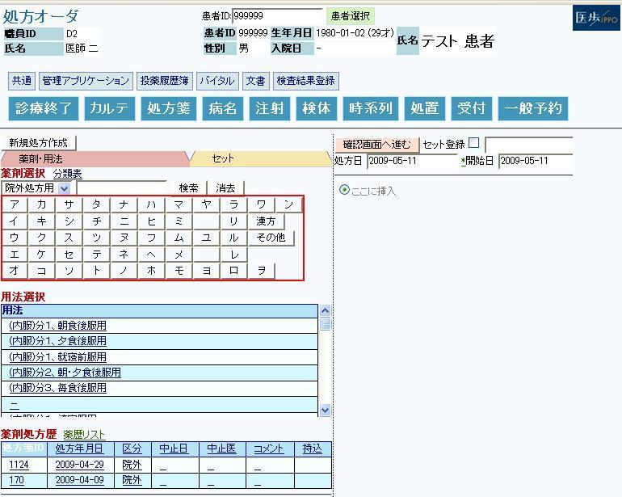
（２） 例えば、①
｢カ｣をクリックすると、「カ」から始まる薬剤の一覧が表示されます
■ 濁音が有る場合、例えば「ハ」を選択しますと、「ハ」「バ」「パ」の順で表示されます
■ テキストボックスに直接文字列を入力してから検索ボタンを押すことで、絞り込み検索することも出来ます
（３） 処方する②
薬剤名をクリックします
（４） 画面右側に薬剤がコピーされます
*選択した薬剤が外用薬の場合、薬の背景がオレンジ色で表示されます
*外用薬を選択した場合、用法を指定しなくても登録できます。
*用法のみを指定し、日数を空白で登録することもできます。
（５） 誤って選択した薬剤は画面右端の④
「薬剤削除」ボタンをクリックすることで、選択を削除する
ことができます
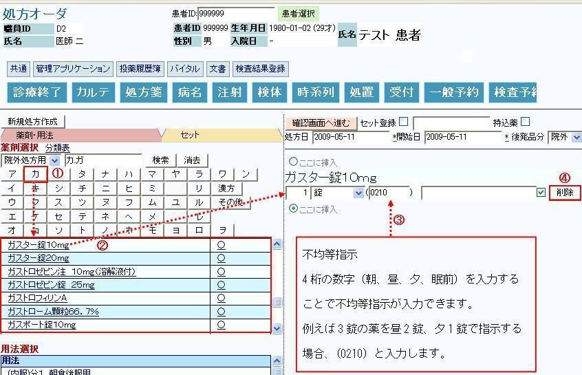
４－３ 薬剤追加方法
（１） 薬剤を追加します
◆ 例として、「ロキソニン錠 60mg」を追加します
（２） 薬剤選択ボタンの①
｢ロ｣をクリックします
（３） ｢ロ｣の薬剤が一覧表示されます
（４） 検索結果に表示された薬剤名から、②
「ロキソニン錠 60mg」をクリックします
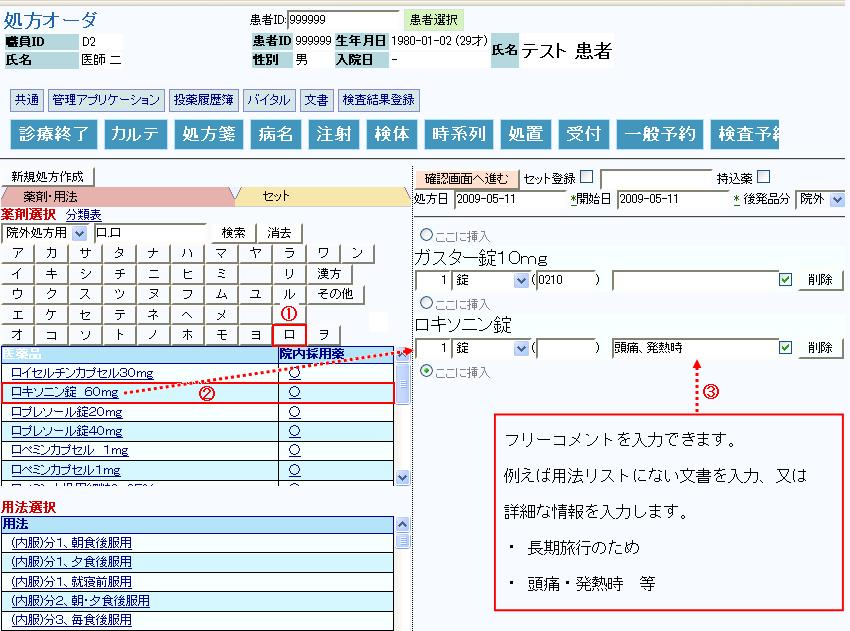
（５） 右画面に薬剤がコピーされます
４－４ 用法追加・登録方法
（１） ①
用法を選択します
（２） 用法をクリックすると、画面右側に用法がコピーされます
*用法を修正する場合は、②
用法削除ボタンを押して再度選択するか、
右画面にコピーされた用法をコンボボックスから直接修正して下さい。
*内服薬を選択した場合は必ず用法、日数を入力する必要があります
*外用薬を選択した場合、用法を指定しなくても登録できます。
*用法のみを指定し、日数を空白で登録することもできます。（外用薬）
（３） ③
処方日数を入力します
（４） ④
処方薬を一包化する場合、「上記、一包化」にチェックを入れて下さい
（５） ⑤
確認画面へ進むボタンをクリックします
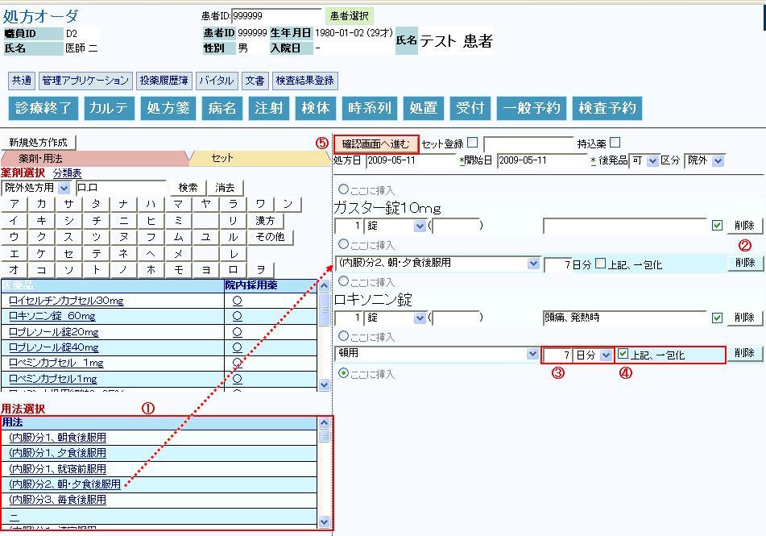
（６） 確認画面が表示されます
※Ｄｒは本確認画面で正しく処方されているかの確認を御願い致します。
（７） ①
「処方登録」ボタンをクリックします
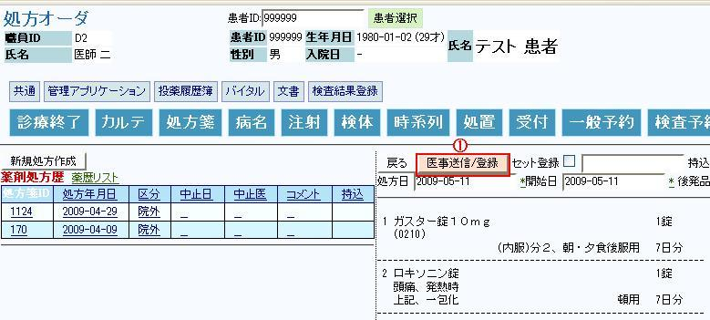
（８） 処方内容が登録され、新規作成完了です
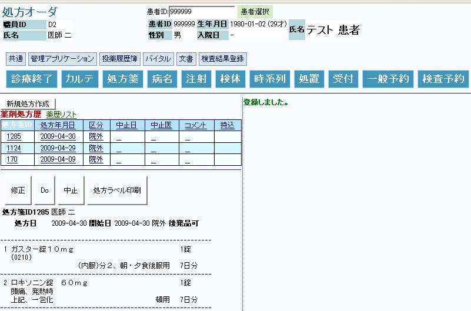
４－５ 処方ラベルの印刷方法
（１） ①
処方ラベル印刷ボタンをクリックします
（２） ポップアップが起動し処方が表示されます
（３） ②
印刷ボタンをクリックします
（４） 任意のプリンタを選択します
（プリンタの情報については、管理者に問い合わせてください）
（５） ③
OKボタンをクリックして下さい
処方ラベルがプリンタに出力されます
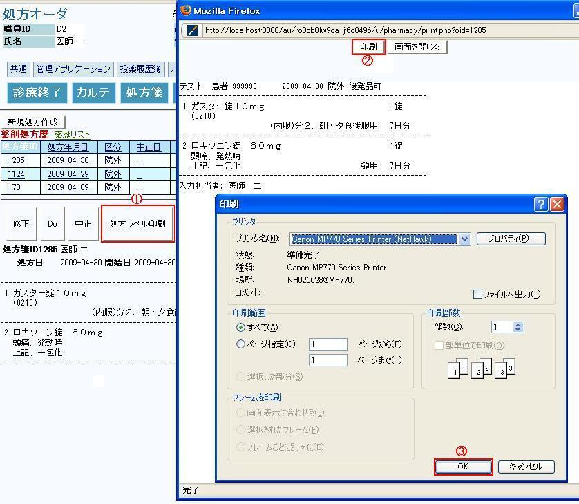
４－６ 薬剤処方歴からのDo処方
（１） ①
Do処方する薬剤処方歴をクリックして下さい
（２） 左下部に処方内容が表示されます
（３） ②
Do処方したい処方内容であることを確認して、「Do」ボタンをクリックします
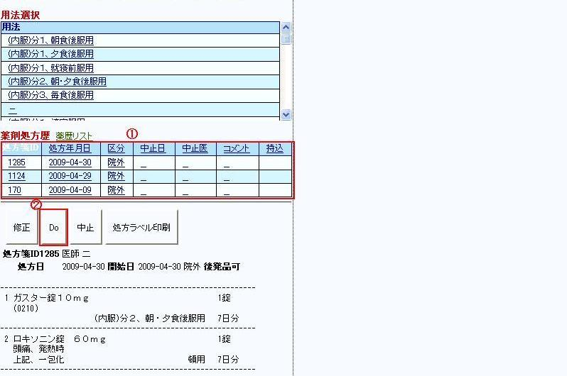
（４） 画面右側に薬剤と用法がコピーされます
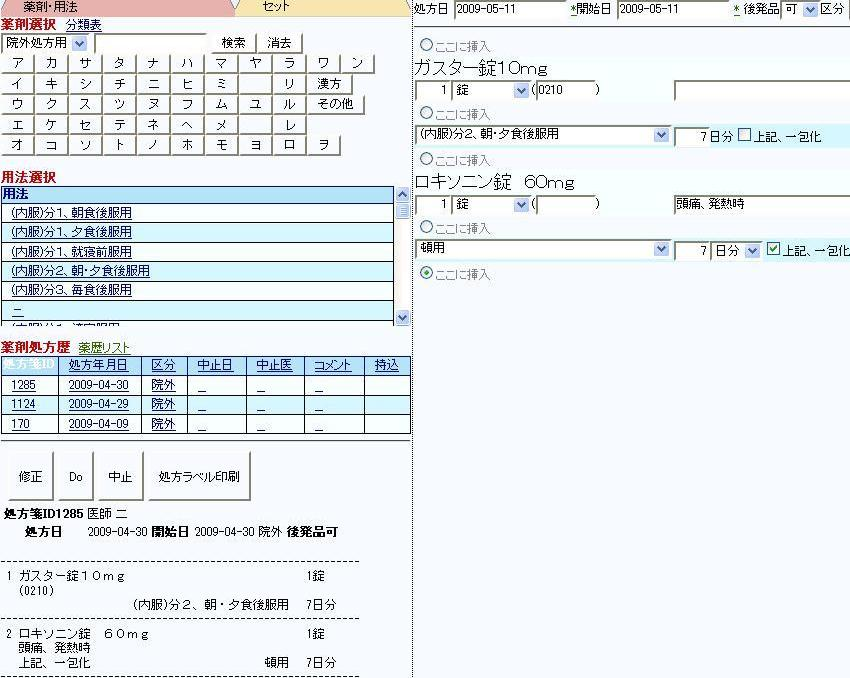
（５） 薬剤を削除する場合は、削除したい薬剤の右端にある①
「薬剤削除」ボタンをクリックして
下さい。該当薬剤が画面から削除されます
（６） 用法を削除する場合は、削除したい用法の右端にある②
「用法削除ボタン」をクリックして
下さい。該当用法が画面から削除されます
（７） 追加・変更がなければ③
「確認画面へ進む」ボタンをクリックします
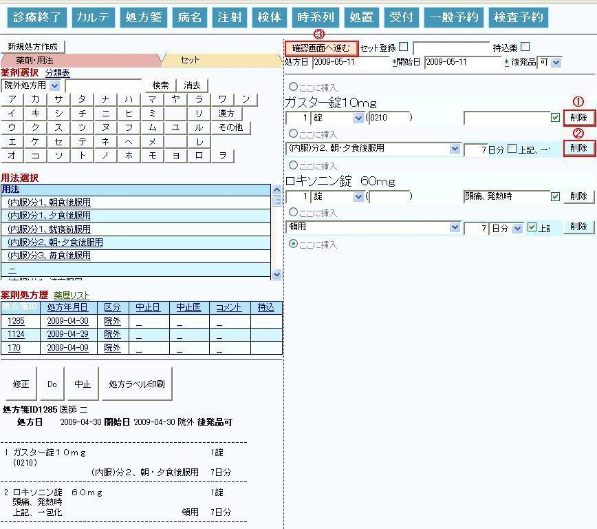
（８） ①
「医事送信／登録」ボタンをクリックします
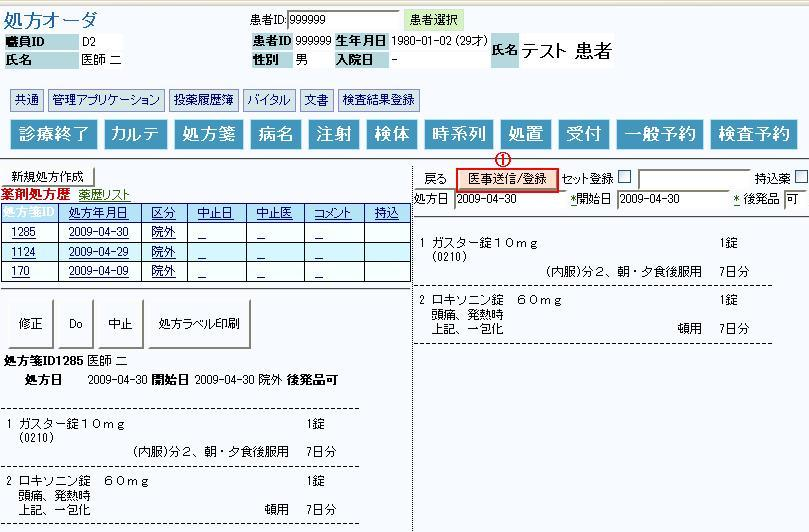
※Ｄｒは本確認画面で正しく修正されているかの確認を御願い致します。
（９） 処方内容が登録されました
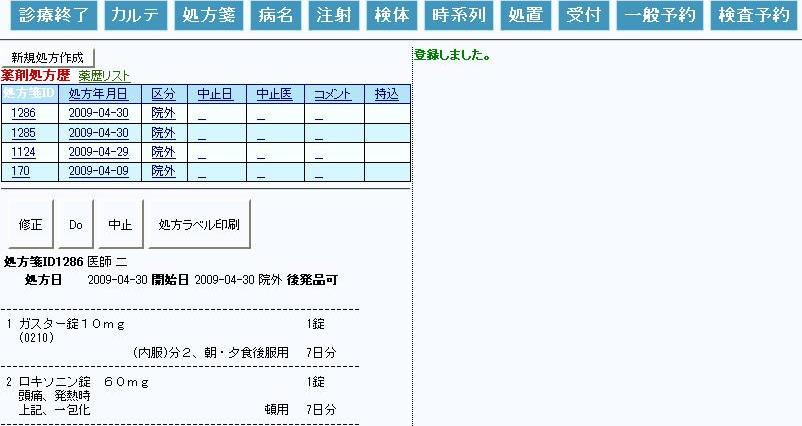
４－７ 薬剤処方の修正
（１） 既にオーダした処方内容を変更します
（２） 修正処方する①
薬剤処方履歴をクリックして下さい
（３） 左下に処方内容が表示されます
（４） ②
「修正」ボタンをクリックします
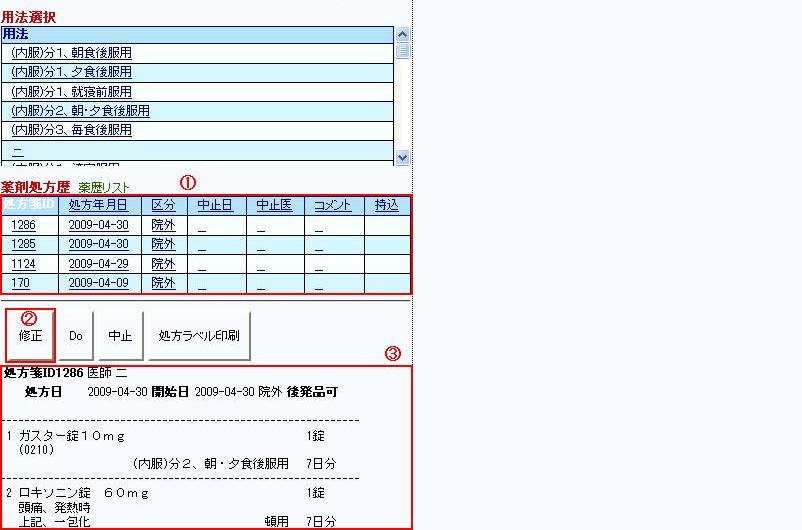
（５） 右画面に、薬剤、用法が表示されます
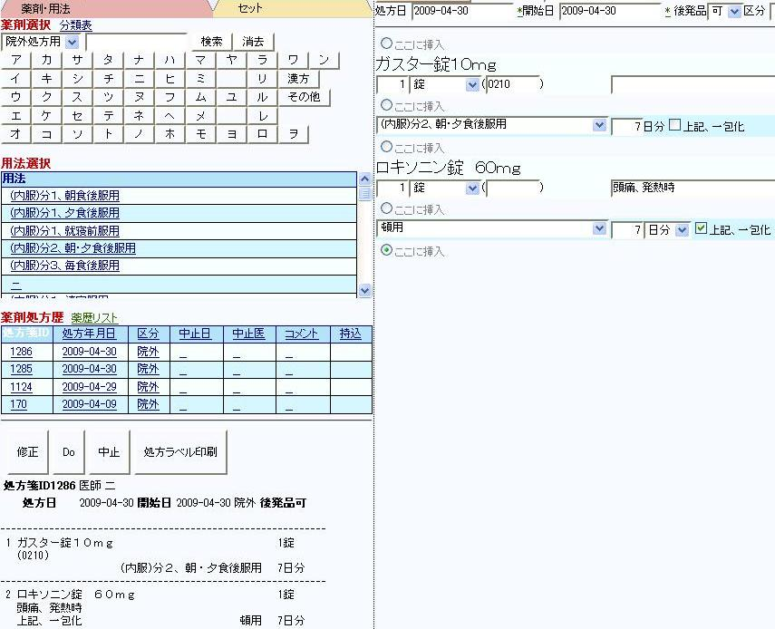
（６） 例として、薬剤の用量を1錠から２錠に変更します
（７） 「確認画面へ進む」ボタンをクリックします
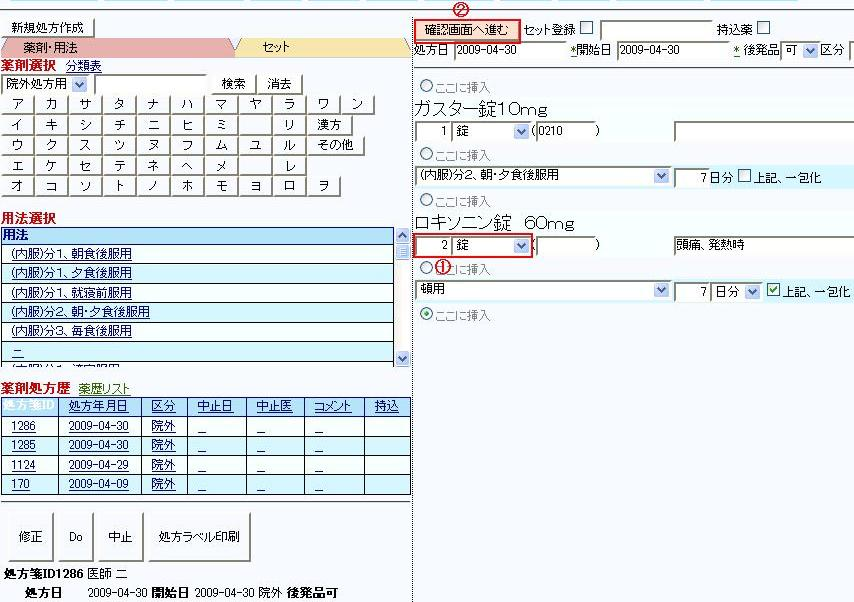
（８） 「処方箋ID**修正」ボタンをクリックします
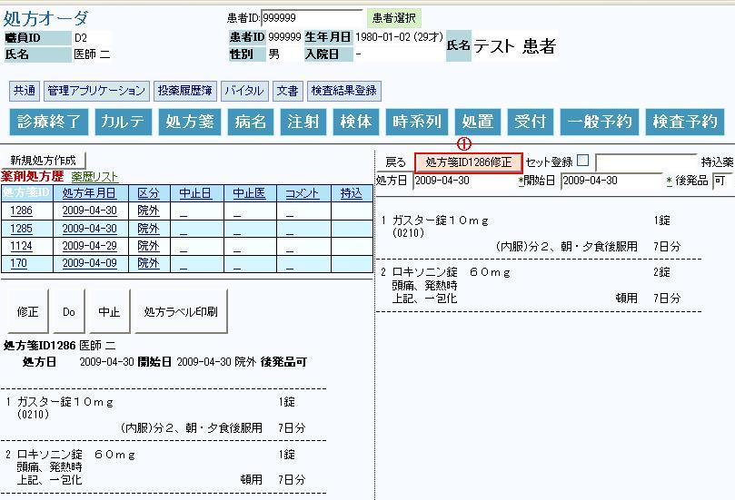
※Ｄｒは本確認画面で正しく修正されているかの確認を御願い致します
（９） 処方内容が修正されました
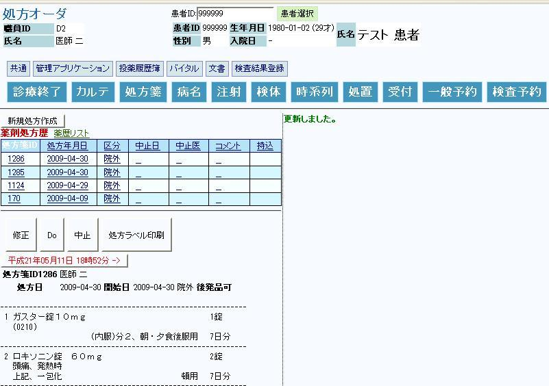